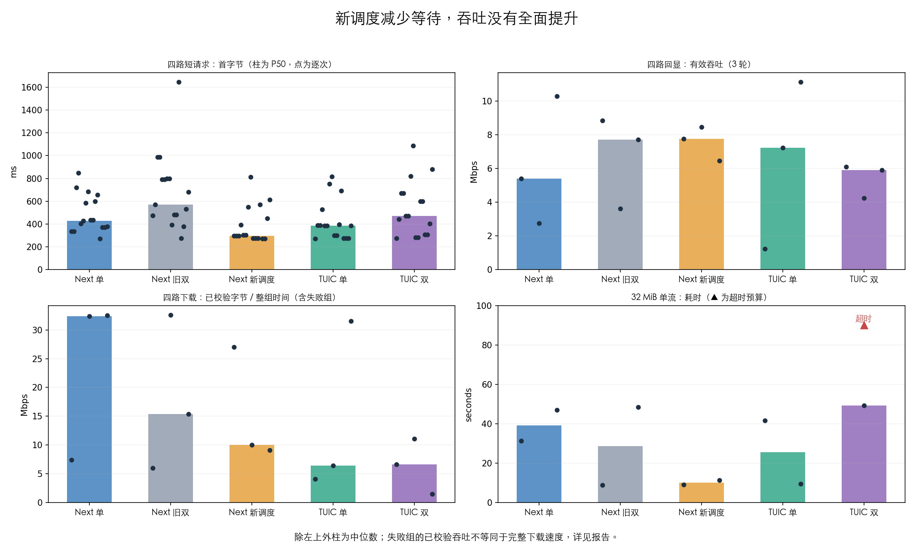
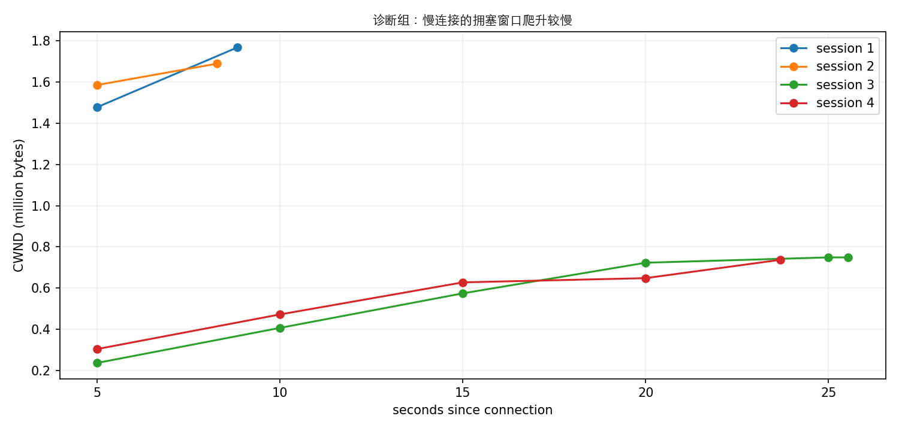

2026-11-22 · 安卓 TFY-AN00 / Android 12 · 香港公网节点 · 同 Wi-Fi 原型核心测试
本轮完成就绪优先、后台预建、近期表现有界调度和诊断；新调度保持可选，未自动替换默认。最明确的本轮改善在短请求：四路首字节 P50 从上轮双连接策略 570.78 降至 296.45 ms，P95 从 1647.36 降至 812.62 ms；TUIC 默认为 387.66 / 817.91 ms。混合负载 P95 从 799.94 到 761.88 ms，变化不大；TUIC 默认为 698.37 ms、双连接为 686.59 ms。样本较少，不作显著性承诺。
四路回显中位数：Next 单连接 5.40、上轮双连接 7.72、新调度 7.77、TUIC 默认 7.22、TUIC 双连接 5.91 Mbps。新调度三轮 7.77 / 8.47 / 6.46 Mbps，范围比上轮 8.85 / 3.60 / 7.72 更集中，但不能用三轮推断长期稳定。
四路单向下载完整任务数：前三种 Next 和 TUIC 默认均 12/12，TUIC 双连接 10/12。按各轮已校验字节计算的有效吞吐中位数依次为 32.38 / 15.34 / 10.03 / 6.40 / 6.62 Mbps；TUIC 双连接仅完整组中位数为 8.84 Mbps。新调度未优于上轮的并发下载，也未优于本轮 Next 单连接结果，不能认定总体吞吐升级成功。
单路 100 MiB 仅各一轮：Next 单连接 23.077、新调度 26.456、TUIC 默认 66.770 秒，均通过校验。32 MiB 新调度两轮 9.005 / 11.237 秒，TUIC 双连接有一轮超时。单流没有被拆到两条连接，本轮样本不能证明慢连接已根治。
正式常规短请求 215/215、混合前台请求 120/120 成功，混合后台下载 20/20 完整；三项超时均出现在 TUIC 双连接（两条并发任务和一次单路 32 MiB），原始记录完整保留。生产入口与正式 App 未更新。手机 VPN、保持唤醒设置已恢复，临时服务及凭证已清理。

新增可选 AdaptiveLanes=true（要求 QUICLanes=2），保留上轮按活跃流数量分配的模式用于对照。新调度优先使用已就绪的连接，未就绪的另一通道按需在后台准备，业务 Dial 不等待它；后台单次最多 1 秒、每通道每秒最多发起一次，随 Reset/Close/父上下文取消。主、次通道均可对称恢复。
两个通道都可用时，结合活跃流、近期有效读写字节速率、正在 Write 的应用字节量与入口 RTT 作有界权重调整。速率权重有限，空闲超过 3 秒失效，Reset 清空旧代数据，旧流关闭不能扣减新代计数。不会仅凭目标没有返回业务数据而判定入口坏掉。现有流不迁移、不重放、不跨连接拆分。
显式 Warm 会先准备主通道，再等待有界的可选副通道准备；第二条失败不使已经可用的主通道失败。普通冷启动/串行请求不主动创建副通道，并发时再后台准备。默认仍为单通道；没有改 BBR、接收窗口、密码或 FCN/1 消息格式。H2 与正式 App 未升级。
同一 Android 原生可执行文件、同一 Wi-Fi、同一 VPS（191.223.214.8）。三种 Next 共用 UDP 19458 和标准 BBR；TUIC 使用实际 CatNode/Xray TUIC v5，19451、BBR、ReduceRtt=false、FastOpen=false。TUIC 双连接使用两个未改动的 TUIC 客户端按活跃流分配，以对照连接资源。协议轮换先后顺序；正式性能测试关闭详细追踪。
短请求每组冷启动 12、连续 12、四路 16、预热 3。混合负载每轮两条 16 MiB 后台下载，与 12 条顺序前台 HEAD 请求共享一个客户端，共两轮；表中另列开始时至少一条下载仍活跃的前台样本数，不能把背景已经完成的请求当作持续负载样本。各组负载活跃时长不同，比较不是精确相同利用率。
回显每组单路/四路各 3 轮、每轮 10 秒，统计收到并校验正确的载荷，握手准备另计。单向四路下载每任务 8 MiB、共 3 轮、共享一个客户端；失败组的已校验字节除以整组耗时仍保留，另列仅完整组的中位数，不能忽略完成率。显式 Warm 的准备时间和校验耗时均包含在整组总耗时中。32 MiB 每组两轮、预算 90 秒；100 MiB 仅 Next 单连接、新调度和 TUIC 默认各一轮、预算 180 秒。单流的新调度仍只用主通道，不应将一次快慢差异归因于双连接。MiB=1,048,576 字节。
P50/P95 使用成功样本 nearest-rank，失败另列；12 个样本的 P95 是该组最大值。吞吐中位数使用通常的中位数定义，仅 2–3 轮，不作显著性或长期稳定保证。
| 实现 | 阶段 | 成功/总数 | 首字节 P50 ms | 首字节 P95 ms |
|---|---|---|---|---|
| Next 单连接 | cold | 12/12 | 689.88 | 1275.22 |
| Next 单连接 | warm | 12/12 | 523.14 | 1970.38 |
| Next 单连接 | batch | 16/16 | 428.13 | 847.03 |
| Next 上轮双连接 | cold | 12/12 | 701.38 | 2680.95 |
| Next 上轮双连接 | warm | 12/12 | 460.82 | 1391.96 |
| Next 上轮双连接 | batch | 16/16 | 570.78 | 1647.36 |
| Next 新调度 | cold | 12/12 | 795.95 | 1742.65 |
| Next 新调度 | warm | 12/12 | 341.7 | 810.46 |
| Next 新调度 | batch | 16/16 | 296.45 | 812.62 |
| TUIC 默认 | cold | 12/12 | 863.55 | 1825.55 |
| TUIC 默认 | warm | 12/12 | 324.8 | 925.5 |
| TUIC 默认 | batch | 16/16 | 383.99 | 817.91 |
| TUIC 双连接 | cold | 12/12 | 728.52 | 1807.58 |
| TUIC 双连接 | warm | 12/12 | 517.55 | 1591.12 |
| TUIC 双连接 | batch | 16/16 | 470.5 | 1085.66 |
| 实现 | 有后台时成功/样本 | 前台总样本 | 加载时 P50 ms | 加载时 P95 ms | 后台下载完整 | 后台总数 |
|---|---|---|---|---|---|---|
| Next 单连接 | 24/24 | 24 | 381.66 | 800.29 | 4 | 4 |
| Next 上轮双连接 | 24/24 | 24 | 419.41 | 799.94 | 4 | 4 |
| Next 新调度 | 24/24 | 24 | 421.44 | 761.88 | 4 | 4 |
| TUIC 默认 | 24/24 | 24 | 459.21 | 698.37 | 4 | 4 |
| TUIC 双连接 | 24/24 | 24 | 351.31 | 686.59 | 4 | 4 |
| 实现 | 并发 | 有效组/总组 | 中位 Mbps | 各轮 Mbps |
|---|---|---|---|---|
| Next 单连接 | 1 | 3/3 | 4.89 | 4.89, 2.66, 5.6 |
| Next 单连接 | 4 | 3/3 | 5.4 | 5.4, 2.75, 10.3 |
| Next 上轮双连接 | 1 | 3/3 | 3.6 | 2.56, 3.6, 5.7 |
| Next 上轮双连接 | 4 | 3/3 | 7.72 | 8.85, 3.6, 7.72 |
| Next 新调度 | 1 | 3/3 | 8.19 | 2.12, 8.89, 8.19 |
| Next 新调度 | 4 | 3/3 | 7.77 | 7.77, 8.47, 6.46 |
| TUIC 默认 | 1 | 3/3 | 8.2 | 8.2, 8.15, 9.34 |
| TUIC 默认 | 4 | 3/3 | 7.22 | 1.23, 7.22, 11.14 |
| TUIC 双连接 | 1 | 3/3 | 7.08 | 7.01, 7.08, 8.81 |
| TUIC 双连接 | 4 | 3/3 | 5.91 | 6.11, 4.23, 5.91 |
| 实现 | 完整任务 | 总任务 | 全部组有效中位 Mbps | 完整组中位 Mbps | 各轮有效 Mbps (完成/总数) |
|---|---|---|---|---|---|
| Next 单连接 | 12 | 12 | 32.38 | 32.38 | 7.41 (4/4), 32.38 (4/4), 32.49 (4/4) |
| Next 上轮双连接 | 12 | 12 | 15.34 | 15.34 | 6.01 (4/4), 32.61 (4/4), 15.34 (4/4) |
| Next 新调度 | 12 | 12 | 10.03 | 10.03 | 27.05 (4/4), 10.03 (4/4), 9.1 (4/4) |
| TUIC 默认 | 12 | 12 | 6.4 | 6.4 | 4.12 (4/4), 6.4 (4/4), 31.56 (4/4) |
| TUIC 双连接 | 10 | 12 | 6.62 | 8.84 | 6.62 (4/4), 11.05 (4/4), 1.49 (2/4) |
| 实现 | MiB | 轮次 | 完整 | 秒 | 收到 MiB | 校验 | 错误 |
|---|---|---|---|---|---|---|---|
| Next 单连接 | 100 | 1 | True | 23.077 | 100.0 | True | |
| Next 新调度 | 100 | 1 | True | 26.456 | 100.0 | True | |
| TUIC 默认 | 100 | 1 | True | 66.77 | 100.0 | True | |
| Next 单连接 | 32 | 1 | True | 31.399 | 32.0 | True | |
| Next 上轮双连接 | 32 | 1 | True | 8.804 | 32.0 | True | |
| Next 新调度 | 32 | 1 | True | 9.005 | 32.0 | True | |
| TUIC 默认 | 32 | 1 | True | 41.662 | 32.0 | True | |
| TUIC 双连接 | 32 | 1 | True | 49.181 | 32.0 | True | |
| Next 上轮双连接 | 32 | 2 | True | 48.436 | 32.0 | True | |
| Next 新调度 | 32 | 2 | True | 11.237 | 32.0 | True | |
| TUIC 默认 | 32 | 2 | True | 9.405 | 32.0 | True | |
| TUIC 双连接 | 32 | 2 | False | 90.0 | 9.41 | — | deadline exceeded |
| Next 单连接 | 32 | 2 | True | 47.006 | 32.0 | True |
独立追踪组四次 32 MiB 均完成：单连接原版 8.833 / 23.688 秒；新调度单流 8.277 / 25.538 秒。该候选为修正边界问题之前的诊断构建，涉及的单流路径未使用被修正的双通道恢复/过期分支；不并入最终性能样本。它们都只使用一个通道。追踪显示：快组第 5 秒 CWND 约 1.48 / 1.59 MB，慢组约 0.237 / 0.305 MB；慢组随后缓慢增长到约 0.74 MB。慢组 RTT 仍约 96–117 ms，未出现持续的大 RTT 膨胀。
四次服务端下载 Write 最大等待约 132 / 381 / 251 / 135 ms，没有捕获超过半秒的下行写阻塞；慢组前 15 秒窗口阻塞帧为零。因此本轮没有证据支持“接收窗口卡死”或“服务端一次写操作卡住十几秒”。线索更符合早期恢复/发送节奏较低、拥塞窗口爬升慢，但未确定底层触发因素，也没有直接复现此前那次 77 秒的完整时间线。单流失速未宣告修复。
快组发送的 QUIC 包字节约 42.1/42.8 MB，慢组约 49.1/46.2 MB，业务载荷均为 32 MiB。该计数不含 UDP/IP 外层，含重传；丢失判定次数也不等于物理丢包率。上传 Read 长等待是 GET 发完后等待响应期间的正常现象，不能当入口故障。

本地 race/vet 通过：覆盖未就绪副通道、主通道失效、后台握手取消、代际计数、速率过期、半关闭、UDP association 和共享下载客户端归属。仍只有单台设备、单 Wi-Fi、单节点；没有蜂窝、多网络、锁屏耗电或识别概率验收。多连接有额外握手与缓冲成本；两个通道轮换期间沿用每池最多两条物理连接的边界，总上限四条。
初次性能采样期间自检发现主通道恢复不对称及旧速率样本复用问题，已停止该次运行并修正。superseded-* 是保留的被替代数据，主动停止造成的退出 143 不计入最终协议失败；它们未并入以上成绩。diagnostic-single 和早期 server 追踪只作诊断；最终 final-* 使用重新编译并冻结的版本。二进制 SHA256、源码、原始 JSONL、CSV 与验证输出均保留；不打包凭证。